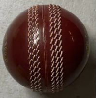
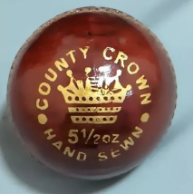
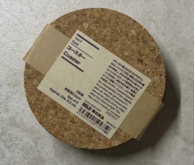
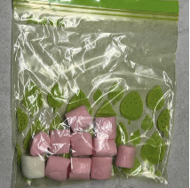
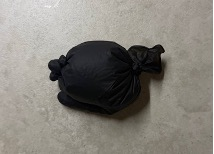
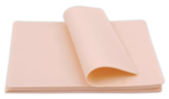
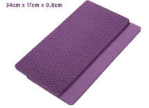

Pneumatic Haptic Simulator for Postpartum Hemorrhage (PPH) Uterine Tone Training
Acknowledgements
I would like to give my heartfelt thanks to my project supervisor, Prof. Khoo, for his guidance and support throughout this journey.
I would also like to thank Dr. Arun for the chance to work on this project and collaborate with the National University Hospital, and for providing me with valuable insights and feedback.
I would also like to extend my gratitude to Dr Cai and Shi Yong, for supplementing my knowledge on pneumatic systems and assisting me wherever I may require guidance.
I would also like to extend my gratitude to my father, for assisting me with the prototype assembly and component procurement.
Lastly, I would also like to thank the lab technicians and everyone else who has supported me with their guidance and feedback throughout this journey.
Table of Contents
Abstract
Post Partum Haemorrhage (PPH) caused by uterine atony remains the leading cause of maternal mortality worldwide. It is characterised by its sudden onset and significant blood loss, requiring quick and timely clinical diagnosis through visual blood loss estimation and tactile assessment to its impact. Current PPH training for year 4 medical students in Singapore often lacks high-fidelity haptic realism. The reliance on manual inflation bulbs to replicate the transition from a 'boggy' to 'firm' uterus is insufficient in equipping students to identify the accurate state of the uterus at a given time.
The project developed two distinct uterine states: "Boggy" (atonic) and "Firm" (contracted) using a closed-loop pneumatic system. Extensive hardness testing was conducted to quantify the tactile signatures of each state. Phase I results identified that under a layer of silicone artificial skin, a soft cricket ball replicated the "firm" state, while a bag of marshmallows replicated the "boggy" state. Phase II results confirmed that an air bladder at 9.0 kPa replicated the "firm" state, while 1.6 kPa replicated the "boggy" state, validated by 6 students and a clinical expert.
1. Introduction
1.1 Clinical Background
Postpartum Hemorrhage (PPH) is defined by the World Health Organization (WHO) as excessive blood loss of 500 mL or more within 24 hours after vaginal birth [1]. It remains the leading cause of indirect maternal mortality worldwide, accounting for approximately 27% of maternal deaths globally [2].
Uterine atony is the most common cause of PPH, accounting for approximately 70.6% of cases [2]. In its healthy physiological state, the muscular middle layer of the uterine wall, also known as the myometrium, contracts immediately after the delivery of the placenta. These contractions compress the spinal arteries that previously supplied the placenta to mitigate blood loss. During uterine atony however, the myometrium fails to contract, and remains in its flaccid state. This prevents the natural compression of the blood vessels, which leads to rapid hemorrhaging [3].
The main clinical diagnostic tool for identifying uterine atony is through abdominal palpation, which usually lasts for 1 to 2 minutes. A healthy contracted uterus is "firm" and "spherical", about the size of a fist and often compared to the hardness of a cricketball. On the other hand, an atonic uterus is softer and spongier, or more commonly referred to as "boggy", making it difficult to palpate. The timely identification of a "boggy" state uterus sets the motion for life-saving interventions, such as IV oxytocin infusion or bimanual compressions to stimulate the necessary contractions [4].
As PPH occurs in approximately 1% to 3% of all deliveries [5], most medical students are unable to encounter a real PPH case, making high-fidelity simulations essential for developing physical diagnostic confidence.
1.2 Literature Review: Existing PPH Training Simulators
The table below shows a summary of the existing commercially available PPH simulators in the market. This analysis highlights a critical gap, where while existing simulators are able to adjust to uterine tones, none are able to create a quantified pressure setpoint, validated against clinical benchmarks, and all of them rely on a manual instructor control for state transitions.
Table 1: Comparison of Existing Commercially Available PPH Simulators
| Simulator | Est. Cost (USD) | Uterine Atony Simulation | Quantified Pressure (kPa) | Haptic Validation | Instructor Required |
|---|---|---|---|---|---|
| NOELLE S550/S551 Series [6] | ~$5,460 | Yes (software controlled) | No | No | Yes (for tone adjustment) |
| MamaNatalie [7] | From $260 | No | No | No | Yes |
| PPH Trainer P97 PRO [8] | ~$3,282 | Yes | No | No | Yes (manual bulb) |
| PROMPT Flex PPH Module [9] | $1,160–$1,680 | Yes | No | No | Yes (manual bulb) |
1.3 Identified Gap
Primary research conducted through interviews with Dr. Arundhati (Senior Consultant, NUH), identifies a crucial gap between current methods of PPH training: medical students frequently struggle to confidently distinguish between a healthy contracted uterus and an atonic (boggy) uterus during abdominal palpation. Current pedagogical tools also significantly contribute to this gap.
Traditional PPH training blends theoretical foundation with limited clinical exposure, resulting in heavy reliance on lectures and standard medical textbooks (Appendix A.1). Clinical education often uses vague analogies to describe the hardness of the uterus, with statements such as "cricketball-like" firmness for a healthy uterus and "soft, marshmallow-like texture" for an atonic one (Appendix A.2). Existing simulators lack quantified, validated pressure setpoints, remaining medical dummies and being unable to cross the threshold to precise diagnostic instruments.
Manual pneumatic trainers such as those from 3B Scientific, also utilise air deflation bulbs to simulate the feeling of an atonic and contracted uterus (Appendix B). The transition from "boggy" to "firm" however has to be continuously controlled by an instructor. As such, the distinguishing between 'firm' and 'boggy' states are not consistent and repeatable, due to the variability of human exertion, limiting their tactile discrimination.
Thus, this report aims to address the lack of realistic automated PPH uterus simulations by determining the exact internal air pressure necessary to replicate each state and validating that the pneumatic system is able to maintain these pressures during clinical palpations, with prototyping and testing of a proof-of-concept prototype.
1.4 Design Specification and Value Proposition
The scope of this project is to design and validate a closed-loop pneumatic system capable of replicating the two distinct uterine states for PPH training. Unlike existing trainers that rely on manually inflating bulbs, the system will be able to transition through the PPH states through a Proportional-Integral-Derivative (PID)-controlled air pressure regulation for a repeatable and instructor independent simulation.
1.4.1 Design Rationale
Two alternative solutions were also considered before ultimately selecting the pneumatic system:
1. Vacuum-based dual-chamber approach: This design pulls a silicone membrane against a rigid internal core to replicate the contraction of the uterus in its firm state, while inflating would replicate the atonic state. However, it required a 3D-printed core and secondary vacuum pump, thus complicating the portable design of the system.
2. Static material swapping (Phase I approach): This was effective for benchmarking haptic targets, but it reintroduces the manual intervention which this project aims to eliminate.
The pneumatic system solution was selected as air functions as a compressible spring, where a single air bag would be able to achieve the full clinically relevant stiffness range through pressure modulation alone. It is also highly repeatable, and removes instructor dependency.
1.4.2 Project Deliverables
This project is structured across two phases with the following deliverables:
Phase I: Material Characterisation
1. Characterise and validate reference materials which can replicate the haptic feel of firm and boggy uterine
states, to establish quantitative benchmarks for pneumatic replication.
Phase II: Pneumatic System Development
1. Design, construct and conduct testing for a closed-loop pneumatic system that is able to replicate both
uterus states at calibrated internal pressures.
2. Validate the pneumatic system's haptic realism by conducting blind identification testing and surveys with
students.
3. Evaluate system performance under simulated stress conditions: (i) Step Response, (ii) Palpation Recovery,
(iii) Repeatability.
System Development and Prototyping
2. Phase I: Material Characterisation & Hardness Testing
2.1 Introduction to Material Characterisation
To transition from clinical analogies (e.g "marshmallow" and "cricketball" like texture), there is a need to look at the variety of materials available to compare each individual hardness levels into something quantifiable. Materials on the Shore Hardness scale along with their characteristics were investigated, to replicate the haptic simulation of the uterus. With the description provided by Dr Arun for the atonic and contracted uterus, similar materials were prioritised to be procured, with a focus on harder materials for the healthy uterus, and softer materials, for the atonic one.
To achieve an accurate standard for the internal pressure for the Proportional Integral Derivative (PID) system, the base material must be validated as accurately representing the hardness of the uterus to be accurate before progressing.
Materials were subjected to a two-tier evaluation. Quantitative force resistance, measured in Newtons, and Qualitative Realism Scoring on a scale of 1 to 5 by Dr Arun.
Table 2: Phase I Material Selection, Fabrication, and Reasoning
| Material | Method of Fabrication | Shore Hardness | Characteristics |
|---|---|---|---|
 Soft Cricket Ball |
Online Procurement | 50/60 Shore A | High compressive strength, Viscoelastic cork-rubber core, Good shape retention |
 Hard Cricket Ball |
Online Procurement | 60/70 Shore A | Very high compressive strength, Viscoelastic cork-rubber core, Good shape retention |
 Cork |
Online Procurement | 55/75 Shore A | High compressive strength, Good shape retention |
 Marshmallows in Bag |
Online Procurement | 10 Shore 00 | Low density, High compressibility, Viscoelastic behaviour |
 Inflated Latex Glove |
Online Procurement | N/A | High elongation at break, Good elastic recovery |
 Silicone Fake Skin |
Online Procurement | 20 Shore A | High elasticity |
 Yoga Mat |
Online Procurement | 25–35 Shore A | Durable, slightly flexible |
2.2 Quantitative Analysis: Force Measurement and Compression
Force is measured in the material characterisation phase to move from a subjective clinical analogy, to a quantifiable value. In clinical practice, the fundal massage must be firm enough to stimulate the uterus, and gentle enough to avoid causing internal tissue trauma (Appendix A.2). By utilising a Force Sensitive Resistor (FSR) along with an Arduino Circuit Board, the force used to conduct a fundal massage for each uterus state can be measured to incorporate into the PID control system in Phase II, serving as the Process Variable (PV) to adjust the pneumatic system's output. A "firm" uterus must resist high amounts of force with minimal displacement, while a "boggy" uterus should have significantly lower resistance force levels.
Apart from the materials to replicate the uterus simulation alone, there is a need to replicate the skin layer surrounding the tissue as it plays a role in the realism aspect of uterus tone identification. As such, the base uterus layer and skin layer needs to be accurate, to gather qualitative feedback from Dr. Arun.
The force sensor was placed directly above the skin layer, where the clinical expert will proceed to palpate the uterus for 30 seconds while providing feedback on the accuracy of the haptic simulation.
The tables below show the results obtained from testing the various materials obtained to simulate uterus tone.
Table 3: Quantitative and Qualitative Evaluation of Uterus State Modalities
| Participant | Material | Force Measured | Realism Score (1-5) | Correct ID |
|---|---|---|---|---|
| Dr Arun | Cork | 297–350 N | 0 (too hard) | NA |
| Dr Arun | Hard Cricket Ball | 230–430 N | 3 (a bit too hard) | Firm |
| Dr Arun | Soft Cricket Ball | 210–560 N | 4 (ok, good to use, size is okay) | Firm |
| Dr Arun | Inflated Glove | — | 3.5 (good, can be used, too small) | Boggy |
| Dr Arun | Marshmallows in bag | — | 4 (good, can be used, too small) | Boggy |
Table 4: Qualitative Feedback on Skin Layer Modalities
| Participant | Material | Force Measured | Realism Score (1-5) |
|---|---|---|---|
| Dr Arun | Yoga Mat | — | 0 (too thick to replicate skin) |
| Dr Arun | Fake Skin | — | 4 (depends on situation) |
| Dr Arun | Leather laptop case | — | 4 (depends on situation) |
2.2.1 Comparative Analysis of "Firm" State Modalities
Replicating the hard and firm nature of a contracted uterus required materials that exhibit low but not zero compliance.
Cork (Score: 0/5): Cork, a high density material, was rejected immediately. There was a lack of displacement under clinical force levels, thus failing to provide the accurate haptic feedback needed despite the uterus being "firm". It also offers no counter force variability, and as such, is not possible to integrate into the PID system. This mirrors the rejection of hard plastic to replace soft tissue simulation.
Hard Cricket Ball (Score: 3/5): While the dimensions and size of the material were anatomically correct, there was feedback provided that it lacked the superficial compliance of the uterus muscle. There was an immediate spike in force with close to zero displacement. This material provided an average force range of 230N to 430N. This material was close, but still slightly too hard.
The Soft Cricket Ball (Score: 4/5): This material was considered the most realistic, due to its thicker layer of twine surrounding the inner core of the cricket ball. Additionally, this material provided the widest force range of 210 to 560N. With the slight give before encountering the core of the cricket ball, it was the most accurate "firm" uterus simulation. By obtaining the compliance of the material under force exerted during the fundal massage, the pneumatic system can more accurately modulate the internal pressure to replicate the uterus tone.
Thus, the hardness level of the cricket ball will be used to be replicated through the PID control system.
2.2.2 Comparative Analysis of "Boggy" State Modalities
To replicate the "boggy", soft state of the atonic uterus, the comparison material had to exhibit a low hardness rating and high compliance to pressure.
Marshmallow (Score: 4/5): The marshmallow material was highly rated for its soft and malleable consistency. The haptic feel of the marshmallow was also interchangeable with the inflated glove, noting that this represented the most accurate "boggy" feel. As such, there is a need to investigate the appropriate amount of air utilised in the PID control system for this specific level of resistance.
Inflated Glove (Score: 3.5/5 - 4/5): The inflated latex glove serves as an initial prototype for the pneumatic approach to replicate the haptic feel of a "boggy" uterus. The glove at first was slightly too small, and did not provide enough resistance when pressure was exerted. The clinical expert tightened a few fingers of the glove, increasing its internal pressure, until the correct feel can be achieved.
This trial proved that a "boggy" state can be achieved through pneumatic systems, and there is a need to ensure that the final prototype maintains a low pressure, high compliance state.
2.2.3 Damping Skin Layers
To create a realistic uterus haptic simulation, the abdominal layer also contributes to the external pressure exerted.
Yoga Mat (Score: 0/5): The high-thickness foam was unsuitable to replicate the layer of skin surrounding the uterus. A layer that is too thick acts as a haptic insulator, limiting the clinician from accurately conducting the fundal massage to identify the uterus.
Fake Skin (Score: 4/5): The fake skin used for tattoo practice was noted as the most realistic, albeit with varying levels of suitability depending on the thickness of the skin. Furthermore, the fake skin was also selected for its ability to stretch and accommodate the deep palpations from the fundal massage.
2.4 Phase 1 Conclusion and Design Requirements
In conclusion the finalised materials validated for further analysis as the target feel for the pneumatic system for the next stage of prototyping in Phase II consists of the soft cricket ball (4/5, 210–560N), for the "firm" state, and the marshmallow (4/5) for the "boggy" state, while utilising a fake skin overlay.
3. Phase II: Hardware Design & Pneumatic System Prototyping
3.1 System Architecture
The pneumatic system must inflate and maintain internal pressure to replicate both "firm" (contracted) and "boggy" (atonic) uterine states while withstanding 30 seconds of continuous palpation.
To achieve this with the closed-loop PID system, the Arduino Uno will continuously read the current air-bag pressure via an analog pressure sensor (XGZP6847A) and compare it to the target setpoint (9.0 kPa for firm, 1.6 kPa for boggy). Based on the error, if any, the PID algorithm will then modulate the PWM output to the DC pump for inflation or solenoid valve for venting excess air, thus driving the internal air pressure to the correct target value. Unlike open-loop systems, the controller continuously adjusts output, even at steady state to compensate for leakage or external disturbances.
A critical design requirement to consider is the disruption rejection. When a student applies palpation pressure, the system must respond immediately to maintain the target sensation. This was validated in Section 5.2, where the system was able to recover to the correct set value within 2 seconds, following continuous palpation.
3.2 Component Selection & Justification
To control the displacement and speed of the air-tight bag, a closed loop pneumatic control system was devised to vary the air pressure within the uterus. The control system consists of:
i. 6V DC Air Pump: Selected for its 1300ml/min flow rate, which enables quick transitions, as compared to a peristaltic pump (too slow), or a compressor (too bulky).
ii. Solenoid Valve: The COM-SOL-007 6V solenoid valve was selected for its fast venting response and two-wire connection for the motor driver connection.
iii. Air Pressure Sensor: The XGZP6847A 100 kPa piezoresistive sensor was selected to align with the physiological pressure setpoints of the prototype. By utilising the integrated transfer function and 10 bit ADC resolution, the system is able to achieve a 0.1 kPa resolution. This is necessary for distinguishing between the two haptic states, which is harder to achieve with a lower resolution sensor like MPX51000.
iv. Motor Driver: The MOSFET-based TB6612FNG motor driver was selected for its utilisation of up to two input signals, which is key for controlling the DC Air Pump and Solenoid Valve.
v. PE-Film Air Bag: PE Film was chosen over silicone for its flexibility, compared to the rigidity of silicone. Its low Young's Modulus also ensures that the surface tension of the plastic does not artificially impact the hardness reading at low pressures (boggy state). Heat-sealed PE film is also airtight, creating a seal against leakage, and ensuring internal pressure is able to reach the set threshold set.
3.3 Pneumatic Uterus Prototyping
The uterus comprises a flexible air-tight bag made from PE film, sealed within a layer of silicone skin. The air-tight bag was measured and cut to about 7.5cm long and 5cm wide. A 4 mm silicone tube will be fitted within the air-tight bag with the use of one-touch fitting, connected to a y-connector, to allow the inflow from the DC pump. The hole for the tube will be made by cutting a small notch with scissors and secured with elastic bands and silicone tape, and fortified with quick drying super glue. Hot glue was rejected due to the heat damaging the surrounding materials.
3.3.1 Air Bag Integrity Testing
Before integrating the Air Bag into the System, the PE-film air bag was tested for leakage to ensure that sufficient pressure was maintained in both states.
The air bag was inflated to 15 kPa, which is above the maximum set pressure of 9 kPa, and submerged in water for 60 seconds. Leak points can be identified visually via air bubbles.
The initial air bags created exhibited leaks at hot-glue sealed one-touch fitting entry points. After reinforcing the seals with silicone tape and super glue, no air bubbles were observed during the same time period and pressure.
3.4 PID Control System Design
With reference to Boyle's Law, which states that P₁V₁ = P₂V₂, as air is supplied to a fixed air-bag volume, the internal pressure then rises, resulting in the surface becoming more resistant to further compression. At its firm state, more air supplied results in a higher internal pressure, resulting in the air-bag resisting more applied pressure (palpation), thus matching the cricket ball hardness. Alternatively, at its boggy state, less air supplied results in a lower internal pressure, resulting in the air-bag yielding under palpation, to match the soft marshmallow-like sensation.
4. Phase II: Calibration & Control
4.1 Pressure-to-Hardness Calibration
To determine the accurate pressure to maintain within the air-bag to replicate each uterine state, the bladder was inflated incrementally, while comparing the hardness level against the previously established benchmarks validated in Phase I (soft cricket ball and marshmallow). By palpating the prototype at each 1 kPa interval from 0–15 kPa, and then fine tuning by 0.1 kPa intervals if necessary, the following set points were obtained:
Firm State: 9.0 kPa
Boggy State: 1.6 kPa
4.2 PID Tuning Methodology
The PID controller was also adjusted to achieve a stable pressure regulation, without momentarily causing over-inflation to occur.
Table 5: PID Controller Parameters and Function
| Parameter | Value | Function |
|---|---|---|
| Kp (Proportional) | 6.0 | Immediate correction when palpation causes pressure drop |
| Ki (Integral) | 1.5 | Eliminates steady-state error during sustained massage |
| Kd (Derivative) | 0.8 | Dampens pump response, prevents bouncy overshoot |
| Sample Interval | 30 ms | Control loop update frequency |
| Min PWM | 80 | Overcomes pump stiction |
| Pressure Ceiling | 30 kPa | Safety limit to prevent bladder rupture |
Anti-windup was implemented by limiting the integral term to ±50. This stops the pump from cycling excessively fast during long error accumulation. The integral resets during state changes to avoid pressure spikes when switching between boggy and firm states.
The solenoid opens when pressure > 1.5 kPa above setpoint, and the pump stops at the same time to avoid conflicts. For quick deflation on a boggy command, the solenoid opens fully at PWM 255 with a 10-second safety timeout.
In the boggy state, a higher effective Kp of 20.0 was implemented, ensuring faster recovery from palpation, as errors during low pressure states would produce insufficient PWM at the standard Kp.
5. Testing, Evaluation & Discussion
5.1 Test 1 - Step Response
The pneumatic system inflated the air-bag from 0 kPa to the target setpoint (firm and boggy), and maintained pressure for 30 seconds. Five trials were conducted for each state. The table below shows the average readings obtained.
Table 6: Test 1: Step Response Performance Summary (n=5 runs)
| Metric | Firm State (9.0 kPa) | Boggy State (1.6 kPa) |
|---|---|---|
| Rise Time: time taken to reach setpoint | 4.65 ± 0.53 s | 1.43 ± 0.12 s |
| Steady-State Mean: average pressure at steady state | 8.63 ± 0.42 kPa | 1.83 ± 0.00 kPa |
| Steady-State: deviation from setpoint | −0.37 kPa | +0.13 kPa |
To note, the firm state exhibited a consistent steady-state of −0.37 kPa below setpoint. Runs 1 and 2 achieved 8.1 kPa while Runs 3–5 achieved 8.9 kPa during firm state testing, which could be due to a battery voltage drop during extended operation, reducing the DC pump's maximum achievable output. The PID anti-windup limit also induces a minor steady-state error, preventing the controller from accumulating sufficient corrective action to fully eliminate small errors. This is a deliberate trade off for the system to not exhibit overshoot during state transitions. Through this analysis, the coupling between battery capacity and integral saturation is demonstrated to reinforce the need for a regulated power supply.
5.2 Test 2 - Palpation Disturbance Recovery
The pneumatic system inflated the air-bag to its firm state at 9.0 kPa, while palpation pressure was applied. The time taken for recovery to occur was then measured and recorded.
During the palpation, there was a disturbance of about 2.12 kPa. The PID controller detects this error, and increases PWM output from 80 to 140, effectively restoring internal air pressure. After palpation stops, the system rapidly recovers to the setpoint within 2 seconds, demonstrating an effective disturbance rejection, which is suitable for continuous clinical palpation training.
Clinical Relevance: The 2 second recovery time must be evaluated against clinical palpation frequency. During clinical palpations, clinicians would typically palpate the abdomen at an interval of 1–2 seconds. Thus, the recovery time achieved is that of the threshold of clinical realism. While acceptable for students to identify differences in the static states, higher recovery time would make for a more realistic massage simulation. Section 8.2 expands on this limitation.
5.3 Test 3 - Repeatability
Five consecutive firm-to-boggy cycles were conducted with an 8-second hold time for each state.
Table 7: Test 3: Repeatability Data for 5 Cycles of Firm-to-Boggy Transitions
| Metric | Firm | Boggy |
|---|---|---|
| Mean Pressure | 8.87 kPa | 1.84 kPa |
| Standard Deviation | 0.09 kPa | 0.05 kPa |
From the results, each state was able to maintain correct internal pressure with little deviation, even with the quick transition between each state. To note, for cycle 1 of the firm state, it was excluded as there was insufficient hold time at the firm state to reach a steady-state internal pressure.
5.4 User Validation Study
A haptic study to validate the haptic feel of the prototype was conducted with 6 participants (2 medical students, 4 non-medical students). Each student had no prior PPH training, ensuring that the responses would be unbiased.
i. Briefing: Participants were given a brief background on PPH, and a quick guide on how to
conduct palpations through a video recording of the clinical expert.
ii. Part A (Calibration): Participants palpated reference materials (cricket ball,
marshmallow) under a layer of silicone skin, and the two pneumatic states of the prototype, rating hardness
on a 1–10 scale, with 10 being the hardest.
iii. Part B (Blind Test): Participants identified which pneumatic state matched which
reference, without knowing which state was presented to them.
iv. Part C (Likert Survey): 5-point agreement scale on realism, learning value, and system
usability.
Hardness Ratings:
Table 8: Comparative Hardness Ratings (Mean ± SD)
| Material | Mean ± SD |
|---|---|
| Cricket Ball (reference) | 9.00 ± 1.10 |
| Pneumatic — Firm (9.0 kPa) | 7.58 ± 0.80 |
| Marshmallow (reference) | 3.17 ± 0.41 |
| Pneumatic — Boggy (1.6 kPa) | 4.50 ± 0.55 |
Blind State Identification: 100% (6/6) of participants were able to correctly identify the firm state as closer to the cricket ball. 100% (6/6) correctly identified the boggy state as closer to marshmallow. 100% (6/6) could distinguish the two states 'easily'.
Comparison Ratings:
Firm vs Cricket Ball: 5/6 (83%) rated 'About Right', 1/6 rated 'Too Soft'.
Boggy vs Marshmallow: 4/6 (67%) rated 'About Right', 2/6 rated 'Too Hard'.
Table 9: Participant Likert Survey Results (n=6)
| Statement | Mean ± SD |
|---|---|
| I can clearly distinguish between the two states | 4.83 ± 0.41 |
| This simulator would help me learn to identify uterine tone | 4.50 ± 0.84 |
| This is more useful than reading about firm vs boggy in a textbook | 5.00 ± 0.00 |
| I would feel more confident diagnosing uterine atony after practice | 4.83 ± 0.41 |
| The automated state transition is an improvement over existing trainers | 4.67 ± 0.52 |
From the user testing, it validates the pneumatic system's haptic fidelity is accurate. The 100% blind identification accuracy also validates that the two pneumatic states are distinguishable and can be identified easily. All Likert scores of ≥4.5/5 indicate a strong agreement on realism and learning effectiveness that can be implemented into future PPH training.
5.5 Challenges & Limitations
Battery Voltage Depletion: The 9V battery exhibited a rapid drop in voltage during extended testing sessions. After an accumulated hour of continuous operation, the PWM of the pump decreased considerably, which can be seen from the variance in Test 1 Runs 1 and 2, where steady state is at ~8.1 kPa, and Runs 3 to 5 (conducted with new battery) where steady state is at ~8.9 kPa. To overcome this, the 9V battery could be replaced with a regulated 12V DC power supply.
Pump Noise: The DC pump produced audible noise at higher PWM cycles (during firm state maintenance), which reduces haptic realism in an official training simulation. This can be resolved by obtaining a quieter pump.
Sample Size: The user validation study only consisted of 6 participants, which is generally insufficient for statistical generalisation. For more significant statistical validation, a larger cohort would be more ideal, including more participation from clinical experts.
6. Discussions
6.1 Clinical and Educational Value
The system removes instructor dependency and human error by fully automating the boggy-to-firm transitions of the uterus without manual bulb control. With the closed-loop pneumatic system supplying consistent, repeatable haptic states for students to practice clinical palpations without variation between sessions, the haptic experience will be consistent across training sessions. This ensures that each student experiences the same calibrated pressure states. This also directly addresses the subjectivity gap previously identified in Section 1.2, as it replaces vague analogies of uterine tone with quantifiable kPa setpoints, validated by a clinical expert.
Notably, this is also the first quantifiable pressure-to-hardness benchmark for uterine tone simulation in Singapore, with participants unanimously rating it more useful than textbook learning (5/5).
6.2 Technical & Scalability Value
The overall component cost will be less than SGD $50, thus making the pneumatic system accessible and replicable for all medical training institutions. The modular design also allows for the addition of FSR live feedback, fluid loss simulation, and VR overlay without the need to redesign the pneumatic system. The open-source code also allows for the development of new pressure standards based on the current code.
7. Conclusion
7.1 Summary of Outcomes
Phase I successfully translated clinical analogies into quantifiable haptic benchmarks, with soft cricket ball (4/5, 210–560N) for the firm state, and marshmallow (4/5) for the boggy state.
Phase II confirmed that a pneumatic air bladder alone can replicate both benchmarks at validated pressure setpoints: 9.0 kPa for firm state and 1.6 kPa for boggy state. The closed-loop PID system demonstrated stable pressure regulation at both setpoints, with rise times of 4.65s (firm) and 1.43s (boggy), and recovery from palpation disturbance within 2 seconds.
User validation with 6 participants achieved 100% blind identification accuracy, with all Likert scores ≥4.5/5 and a perfect 5.0/5 rating for 'better than textbook'.
Table 10: Summary of Deliverables Achieved
| Deliverable | Result |
|---|---|
| 1. Material characterisation | ✓ Cricket ball & marshmallow validated as benchmarks |
| 2. Closed-loop pneumatic system | ✓ PID-controlled, 9.0/1.6 kPa setpoints achieved |
| 3. Haptic validation | ✓ 100% blind identification, 4.08/5 realism |
| 4. Performance evaluation | ✓ Step response, recovery, repeatability tested |
7.2 Broader Significance
This project establishes the first quantifiable pressure-to-hardness standard for pneumatic uterine tone simulation, providing a reproducible foundation for future PPH training simulations in Singapore, and across the globe. The methodology, which consists of material characterisation, pneumatic calibration, and clinical validation, is also transferable to other haptic simulation challenges in other medical fields. With further development, the system has potential for publication, patent protection, and adoption across NUS medical training curriculum.
8. Future Works
8.1 Closing the Haptic Feedback Loop
The next important step is to integrate the FSR output as a live PID process variable, whereby the massage force applied by the student directly causes the boggy-to-firm transition in a realistic manner. The therapeutic force threshold measured during the tests shall be used for this purpose. This single addition will convert the current prototype from a passive simulator to a fully reactive simulator.
8.2 Hardware Refinements
Some of the hardware refinements include: replacing the 9V battery with a 5V/12V DC power supply; replacing the DC pump with a micro-pump to reduce the noise level; creating a silicone bladder with the anatomical dimensions of a uterus, and creating a housing to house all the electronics within a body-form simulator.
To achieve a recovery time <0.5s, suitable for realistic continuous palpation at clinical frequencies, a higher-capacity pump or dual-pump configuration should be investigated to ensure that the pneumatic system maintains haptic fidelity, even during compressions.
8.3 Expanded Clinical Validation
The next level of clinical validation includes a blinded study with a group of Year 4 medical students at the NUS faculty of medicine. Pre- and post-training confidence score tests for PPH uterine state identification shall be conducted. Statistically significant therapeutic force thresholds shall be determined for a number of clinical experts. The results shall be publishable in medical simulation or biomedical engineering journals.
References
- [1] World Health Organization, "Operational Guidance: Prevention and Management of Postpartum Haemorrhage," 2024. Available: WHO PPH Guidance
- [2] L. Say et al., "Global causes of maternal death: a WHO systematic analysis," Lancet Glob Health, vol. 2, no. 6, pp. e323-33, Jun. 2014. Available: PubMed
- [3] F. G. Cunningham et al., Williams Obstetrics, 26th ed. New York, NY, USA: McGraw-Hill Education, 2022.
- [4] MSD Manuals, "Postpartum Hemorrhage (PPH): Treatment," 2023. Available: MSD Manuals
- [5] G. Carroli et al., "Epidemiology of postpartum haemorrhage: A systematic review," StatPearls, 2023. Available: NCBI
- [6] Gaumard Scientific, "NOELLE® S575.100 Advanced Maternal and Neonatal Simulator." Available: Gaumard
- [7] Laerdal Global Health, "MamaNatalie Birthing Simulator." Available: Laerdal
- [8] GT Simulators, "Postpartum Hemorrhage Simulator (PPH Trainer P97 Pro)." Available: GT Simulators
- [9] Limbs & Things, "PROMPT Flex PPH Module." Available: Limbs & Things
- [10] Ames Direct, "Understanding Shore Hardness." Available: Ames Direct